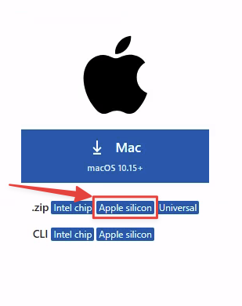
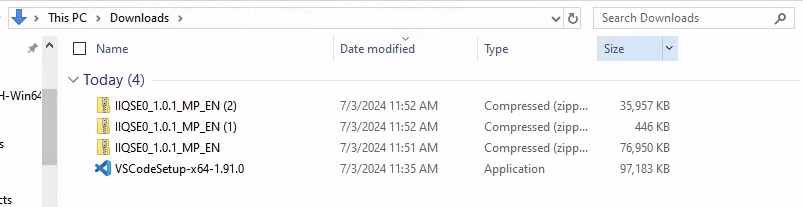
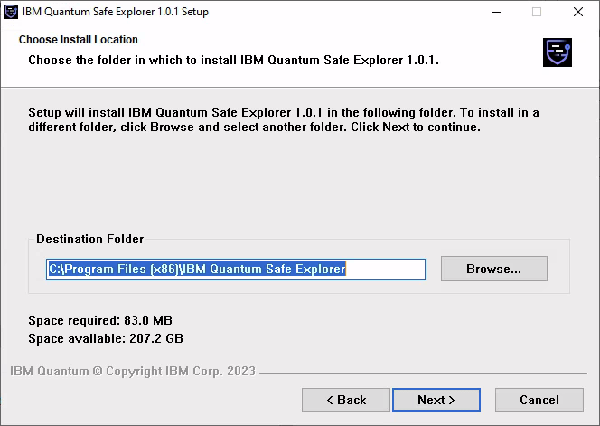
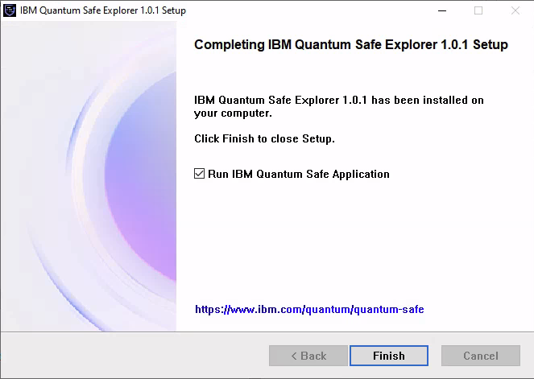
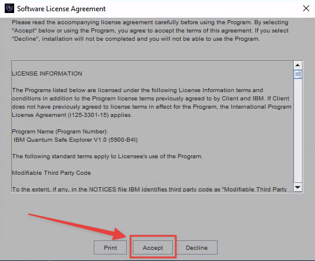
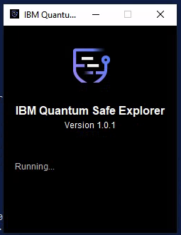
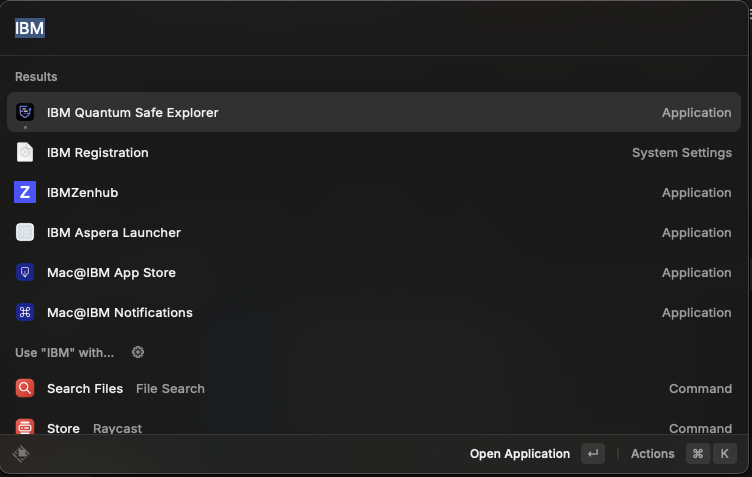
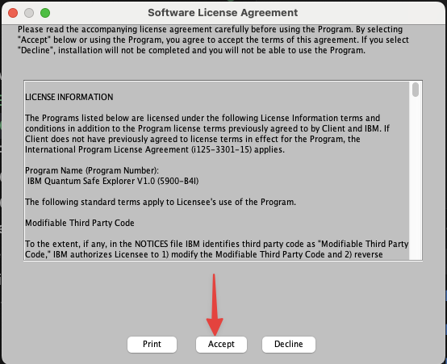
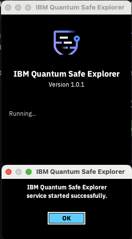
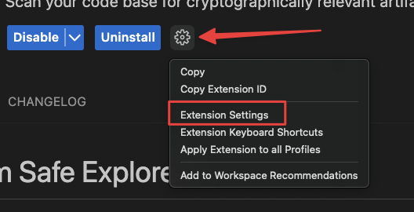

Installation
- Installing Quantum Safe Explorer on Windows
- Installing Quantum Safe Explorer on macOS
- Uninstalling Quantum Safe Explorer on Windows
- Uninstalling Quantum Safe Explorer on macOS
- Installing/Uninstalling QSE VS Code extension
- Configuring QSE VS Code extension
Tip: Use the top-left Change version dropdown to select the version you’re running.
1 Overview
This guide provides step-by-step instructions for downloading, installing, configuring, and running IBM Quantum Safe Explorer (QSE).
It covers:
- Prerequisites (VS Code + Java)
- Where to download QSE packages
- Installing the QSE service (Windows/macOS)
- Installing the VS Code extension (
.vsix) - Post-install configuration in VS Code
- Running scans
- Troubleshooting
2 Prerequisites
For any installation, to use the VS Code plugin you must install VS Code and OpenJDK 17+.
Supported / recommended environment
- OS: Windows 11 or macOS (Ventura on Intel, M1 or higher)
- RAM: 16 GB minimum, 32 GB recommended
- OpenJDK 17.0.0 or higher
- Git Bash (Windows)
2.1 Install Visual Studio Code
Grab VS Code for Windows from https://code.visualstudio.com/download
- Download the System Installer.
Double-click and install to the following path (as shown below):
Grab VS Code for macOS from https://code.visualstudio.com/download
- Download the .dmg file for your architecture (for M1 and newer, choose Apple silicon)

Open the downloaded file (double-click)
Drag Visual Studio Code.app to the Applications folder
2.2 Install OpenJDK 17+
Microsoft’s OpenJDK 17 (minimum version) can be found here:
To see all versions:
Go to your Downloads folder and double-click the microsoft-jdk-17.0.11-windows-x64.msi file.
- Let the installer set
JAVA_HOME. - Click
Next, thenInstall.
Install OpenJDK 17 on Homebrew
Refer to: https://formulae.brew.sh/formula/openjdk
brew install openjdk@17For the latest version, simply
brew install openjdkIf you have other Java versions installed, you may need to add OpenJDK 17 (replace 17 with your version) to your PATH:
echo 'export PATH="/opt/homebrew/opt/openjdk@17/bin:$PATH"' >> ~/.bashrc
. ~/.bashrc3 Download required software
3.2 Download platform-specific bundles
Download the application bundles corresponding to your operating system.
Note: In many distributions, the QSE artifacts come as multiple zip packages that must be extracted into the same folder.
3.3 Download the installer (optional)
Download the QSE installer package if you prefer installing via PKG (macOS) / EXE (Windows) rather than manual setup.
4 Extract the QSE packages
After download, extract/unzip all QSE artifacts into the same directory.
Important: These files often use the same base name; keep them together.

Extract them all to the same folder:

Example folder listing:
PS C:\Users\Administrator\Downloads\IIQSE0_1.0.1_MP_EN> tree /F
Folder PATH listing
Volume serial number is 1EA9-8239
C:.
├───M0GT5EN
│ ibm-quantum-safe-explorer-1.0.1.vsix
│
├───M0GT6EN
│ │ cli.sh
│ │ LicenseAcceptance.config
│ │ version
│ │
│ ├───la_home
│ │ LA_cs
│ │ ...
│ ├───lib
│ │ ...
│ └───swidtag
│ ibm.com_IBM_Quantum_Safe_Explorer-1.0.1.swidtag
│
└───M0GT7EN
IBM Quantum Safe Explorer.exeExample artifacts:
-rw-r--r--@ 1 user staff 35M Jun 26 15:59 IIQSE0_1.0.1_MP_EN(2).zip
-rw-r--r--@ 1 user staff 73M Jun 26 15:58 IIQSE0_1.0.1_MP_EN.zip
-rw-r--r--@ 1 user staff 446K Jun 26 15:58 IIQSE0_1.0.1_MP_EN(1).zipUnzip them all into the same folder:

Example directory structure:
tree
.
├── M0Z1CEN
│ └── IBM Quantum Safe Explorer.pkg
├── M0Z1FEN
│ └── ibm-quantum-safe-explorer-2.2.5-0.vsix
└── M0Z1BEN
└──CLI
├── LicenseAcceptance.config
├── cli.sh
├── version
├── la_home
├── lib
├── swidtag
└── insights5 Install QSE service (application)
This installs and runs the local QSE service that the VS Code extension and CLI talk to.
Run the installer:
PS C:\Users\Administrator\Downloads\IIQSE0_1.0.1_MP_EN> cd .\M0GT7EN\
PS C:\Users\Administrator\Downloads\IIQSE0_1.0.1_MP_EN\M0GT7EN> & '.\IBM Quantum Safe Explorer.exe'The following window will pop up. Use the defaults.

When installation is complete, click Finish and allow it to start the service.

Click Accept when prompted.

Once it’s running, do not close the window.

Install the PKG (requires admin):
Double-click the IBM Quantum Safe Explorer.pkg file
Alternatively, run:
sudo installer -pkg M0Z1CEN/IBM\ Quantum\ Safe\ Explorer.pkg -target /ApplicationsLocate the desktop shortcut for IBM Quantum Safe Explorer and start it.

You should see the following windows; click Accept.

The QSE service should now be running.

Do not close this window. In some versions it does not continue running in the background. Minimize if you wish to dismiss it.
6 Install the CLI (optional but useful)
The cli.sh script can be used to run scans from a terminal and is also used by some workflows.
Simply change directory to where you extracted the CLI bundle. The cli.sh file will be used to perform the actual scan. Assuming you unzipped from your \Downloads directory (example):
PS C:\Users\Administrator\Downloads\IIQSE0_1.0.1_MP_EN> cd .\M0GT6EN\Simply change directory to where you extracted the CLI bundle. The cli.sh file will be used to perform the actual scan. Assuming you unzipped from your \Downloads directory (example):
cd ~/Downloads/M0Z1BEN/CLI7 Install the VS Code extension (.vsix)
The VS Code extension ships as a .vsix file (example: quantum-safe-explorer-2.2.5-0.vsix).
7.1 Install using the VS Code CLI
PS C:\Users\Administrator\Downloads\IIQSE0_1.0.1_MP_EN> cd .\M0GT5EN\
PS C:\Users\Administrator\Downloads\IIQSE0_1.0.1_MP_EN\M0GT5EN> code --install-extension ibm-quantum-safe-explorer-1.0.1.vsix
Installing extensions...
Extension 'ibm-quantum-safe-explorer-1.0.1.vsix' was successfully installed.cd M0Z1FEN # or whatever this folder is called for you!
code --install-extension quantum-safe-explorer-2.2.5-0.vsix
Installing extensions...
Extension 'quantum-safe-explorer-2.2.5-0.vsix' was successfully installed.7.2 Enable the code command (if not installed)
If code isn’t recognized:
- Open Visual Studio Code
- Open the Command Palette
- Windows/Linux:
Ctrl + Shift + P - macOS:
Cmd + Shift + P
- Windows/Linux:
- Run: Shell Command: Install ‘code’ command in PATH
- Approve the installation (may require admin password)
- Restart your terminal and retry:
code --install-extension quantum-safe-explorer-2.2.5-0.vsix8 Configure the VS Code extension
In VS Code:
- Click the Extensions icon (left sidebar)
- Select IBM Quantum Safe Explorer
- Click the extension Settings

8.1 Required settings
- Click Edit in settings.json:

- qs-explorer.sourceFileExtensions — Source file types to scan (e.g.,
.java,.py)
"qs-explorer.sourceFileExtensions": [
".java",
".jar",
".dart",
".go",
".cpp",
".cs",
".py"
],8.2 Additional configuration (paths/credentials/workspace)
Some environments require further setup (paths, credentials, workspace settings, or additional tooling). See:
9 Run a Quantum Safe scan (VS Code)
Once installed and configured:
- Open VS Code
- Open a project or files to scan
- Open the Command Palette:
- Windows/Linux:
Ctrl + Shift + P - macOS:
Cmd + Shift + P
- Windows/Linux:
- Run one of:
- Quantum Safe Explorer: Scan API Discovery
- Quantum Safe Explorer: Scan Cryptography Analysis
10 Troubleshooting
10.1 “Scan Cryptography Analysis” shows no vulnerabilities / algorithms
If scanning Java source, .java files often need to be compiled into .class files to appear in the analysis.
javac your-file.java10.2 Scan results are not updating
QSE uses qs_explorer_result and qs_scan_result as a cache.
- Delete those folders/files
- Re-run the scan command to get a fresh scan
11 Uninstalling the QSE service
There is a bug in v1.0.1 uninstall on Windows that can cause issues when v2.x is installed later.
11.1 Windows notes (v1.0.1)
- Uninstall via Add or Remove Programs (normal uninstall)
- Manually delete the
qs-explorerfolder from the user’s home directory
If the folder is not removed and v2.x is later installed, scanning can fail.
This issue is resolved in v2.x uninstallers.